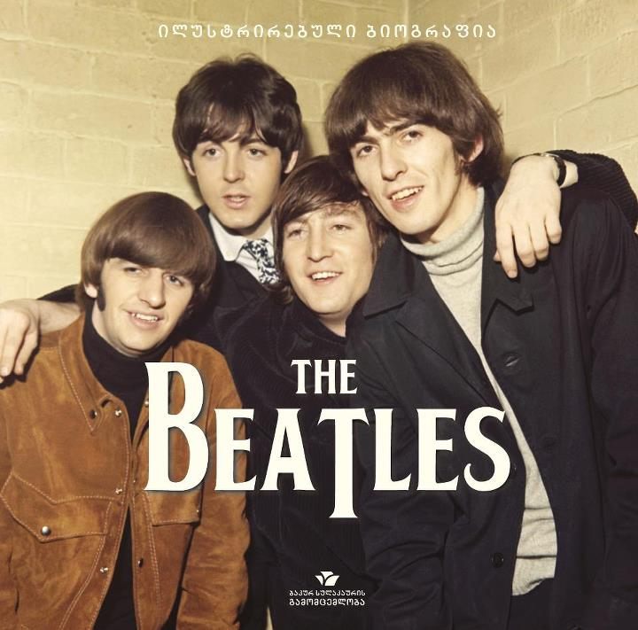
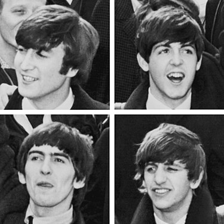
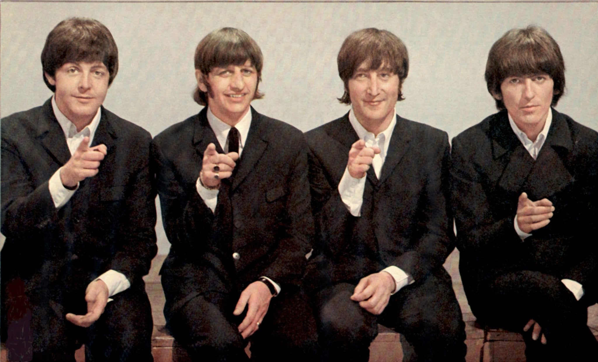

ბითლზი — 1960 წელს ჩამოყალიბებული პოპ და როკ-ენ-როლჯგუფი ინგლისის ქალაქ ლივერპულიდან. დღემდე იგი მუსიკის ისტორიაში ერთ-ერთ ყველაზე წარმატებულ ჯგუფად ითვლება. ოთხეული, რომელიც 1962წლიდან შედგებოდა ჯონ ლენონი, პოლ მაკარტნის, ჯორჯ ჰარისონისა და რინგო სტარისგან , 1960-იან წლების აშშ-ის მუსიკაში ბრიტანული შემოსევის პიონერად გახდა.დაიწყო რა სკიფლისა და 1950-იანი წლების ტიპის როკ-ენ-როლის შესრულებით, ბითლზმა შემდგომში საკუთარი მუსიკა დახვეწა, პოპ-ბალადებიდან ფსიქოდელიურ როკამდე, რასაც ხშირად ემატებოდა კლასიკური მუსიკისა და სხვა ჟანრების ელემენტები. მათ საოცარ პოპულარობასთან ერთად, რომელმაც პირველად იფეთქდა „ბითლომანიის“ სახით, ასევე მასშტაბებს იძენდა ჯგუფის წევრების, როგორც სიმღერების ავტორების, ნიჭი. ბითლზი 1960-იანი წლების სოციალური და კულტურული რევოლუციების საფუძვლად იქცა.
1957 წლის მარტში, ლივერპულში, ქუორი ბენკის სკოლაში ჯონ ლენონმა ჩამოაყალიბა სკიფლის შემსრულებელი ჯგუფიქუორიმენი. ქუორიმენის ერთ-ერთ კონცერტზე (უოლტონ გარდენი, წმ. პეტრეს ეკლესია, 6 ივლისი, 1957) აღმოჩნდა პოლ მაკ-კარტნი, რომელიც შეუერთდა ჯგუფს. 1958 წლის 6 თებერვალს ერთ-ერთ კონცერტს ასევე დაესწრო ახალგაზრდა გიტარისტი ჯორჯ ჰარისონი.ბითლზის ისტორიაქუორიმენიჰამბურგიკევერნის კლუბიშეხვედრა Decca-სთანბითლომანია ბრიტანეთშიაშშ გამოცემებიამერიკის დაპyრობა1966 წელიუფრო პოპულარული ვიდრე იესომოგზაურობა რიშიკეშში დაშლა გაერთიანებებიჯგუფები ბითლზის წევრების მონაწილეობით ქრონოლოგიამაკ-კარტნიმ ჰარისონი გაიცნო სკოლის ავტობუსში. მაკ-კარტნის თხოვნით, ჰარისონი შეუერთდა ქუორიმენს მთავარი გიტარისტის სახით 1958 წლის მარტში, ერთ-ერთი რეპეტიციის შემდეგ, მიუხედავად იმისა, რომ ლენონს არ მოსწონდა ჰარისონის ასაკი - იგი ყველაზე უმცროსი იყო. მომავალი ბითლზის შემადგენლობა ნელ-ნელა ყალიბდებოდა და 1960 წლის იანვარში მასში მოვიდა ლენონის მეგობარი სამხატვრო სასწავლებლიდან,სტიუარტ სატკლიფი, რომელიც ბას გიტარაზე უკრავდა. ლენონიც და მაკ-კარტნიც უკრავდნენ რითმ გიტარაზე და ჯგუფმა რამდენიმე დრამერი შეცვალა.
ქუორიმენმა რამდენიმე სახელი გამოიცვალა - "Johnny and the Moondogs", "Long John and the Beatles", "the Silver Beetles" (ეს სახელი მათ ლარი პარნსმა შესთავაზა). შემდეგ, 1960 წლის აგვისტოში მათ 'The Beetles' დაირქვეს (ბადი ჰოლისა და ჯგუფის The Cricketsპატივსაცემად). ლენონს სურდა ჯგუფის გადარქმევა 'The Beatals'-ად. შემდეგი სახელი იყო 'Silver Beats', The Silver Beetles, and the 'Silver Beatles', ხოლო საბოლოო - უკვე The Beatles. ლარი პარნსთან ერთად მათ მცირე ტური მოაწყვეს და იქცნენ 'ბითლზად'.1960 წლის მაისში ჯგუფმა კვლავ მოაწყო მცირე ტური, მომღერალ ჯონი ჯენტლთან ერთად. კოლექტივს ჯერ კიდევ არ ჰყავდა მუსიკოსი, რომელიც დაუკრავდა დასარტყამ ინსტრუმენტებზე. მათთან ხოლმე უკრავდა შედარებით უფროსი, ტომი მური. მან დატოვა ჯგუფი და დაუბრუნდა ბოთლების ქარხნის მძღოლის საქმიანობას. შემდეგი მის მაგივრად იყო ნორმან ჩეპმენი. მცირე ხნის განმავლობაში მან დაუკრა დასარტყამებზე, მაგრამ მცირე ხანში იგი სხვა სახელმწიფო სამსახურში იხმეს. მას წასვლას დაემთხვა ჯგუფის მიწვევა ჰამბურგის კლუბებში, როდესაც ბითლზმა არ იცოდა, როგორ მოეგვარებინა დასარტყამების პრობლემა
